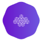

<!-- <mat-toolbar>
  <mat-toolbar-row>
    <div class="logo-container">
      <a class="logo-a"
        ></a>
      Argi Go
    </div>
  </mat-toolbar-row>
</mat-toolbar> -->

<mat-toolbar [color]="color" class="example-toolbar">
  <button
    mat-icon-button
    [@rotatedState]="iconRotateState"
    (click)="expandedToggle()"
  >
    <mat-icon>menu</mat-icon>
  </button>
  <span>Argi-Go</span>
</mat-toolbar>
<mat-sidenav-container class="sidebar-sidenav-container sidebar">
  <mat-sidenav #snav mode="side" fixedTopGap="56" [opened]="isExpanded">
    <argi-sidebar [isExpanded]="isExpanded"></argi-sidebar>
  </mat-sidenav>
  <mat-sidenav-content class="router-container">
    <router-outlet></router-outlet>
  </mat-sidenav-content>
</mat-sidenav-container>
